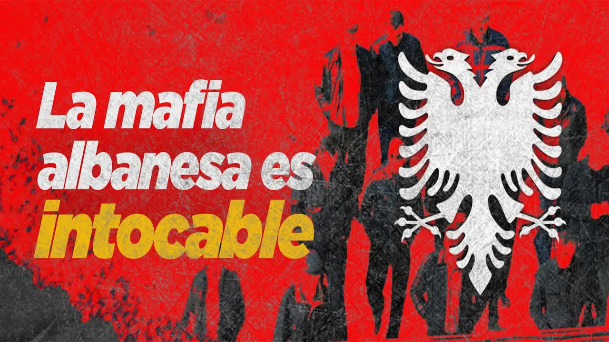
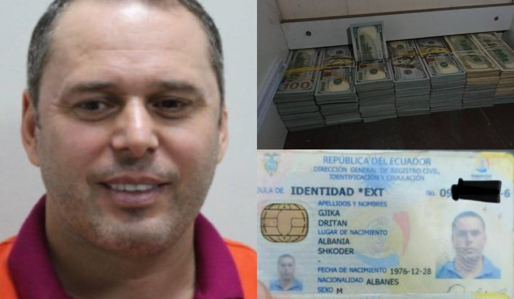
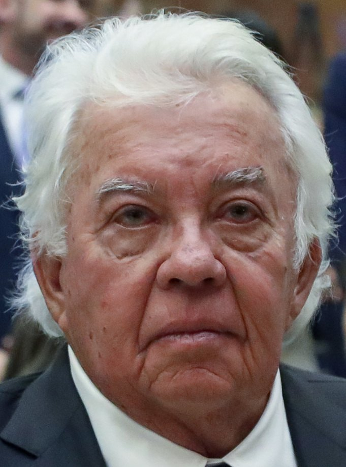
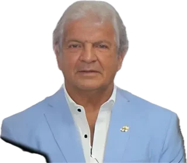
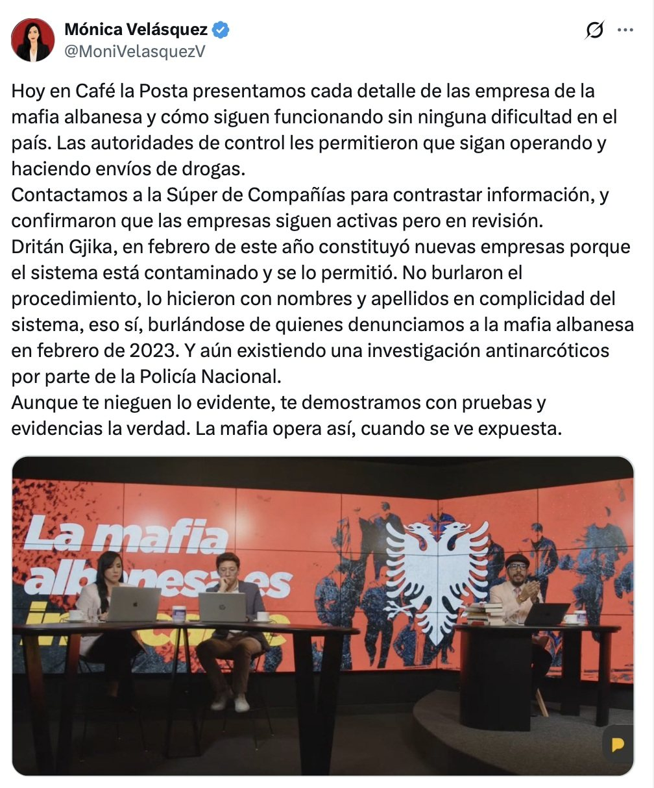
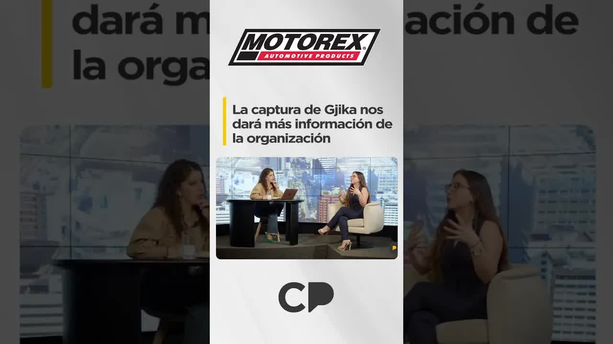
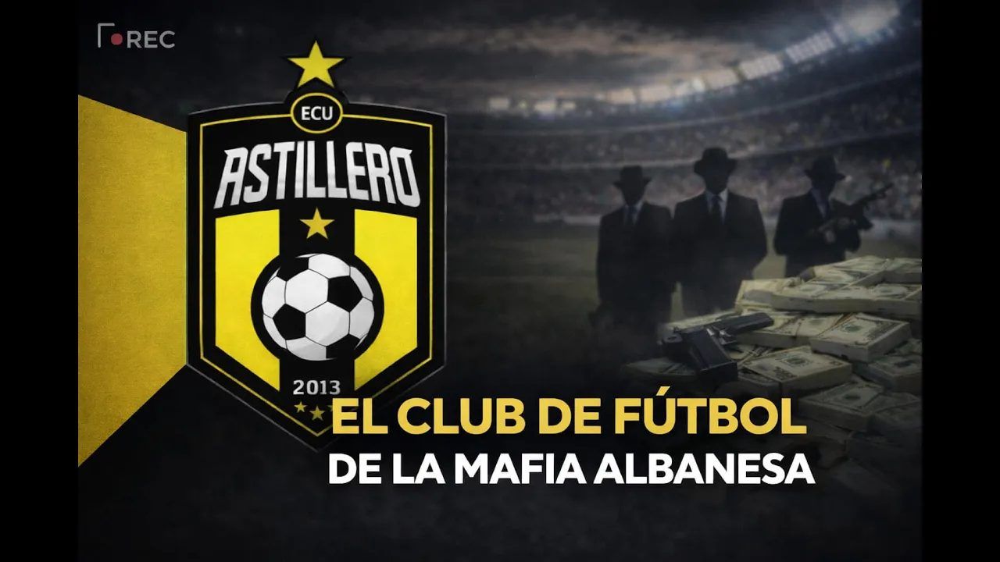

Aug 22, 2024 · The Albanian mafia keeps operating with impunity
Dritan Gjika arrived in Ecuador in 2009 on a tourist visa and left a trail of 71 companies: construction firms, real estate agencies, banana producers, a cannabis exporter, a sand quarry. The police identified him as the head of the Albanian mafia in the country, the group that replaced the Italians in shipping cocaine to Europe. His business partner was Rubén Cherres, the friend of the president's brother-in-law. In August 2024, six months after the raid that failed to catch him, La Posta checked the corporate registry: his companies were still active.
 Ultimate beneficial owner
Ultimate beneficial owner
To understand this story, you need to know who runs drug trafficking in Ecuador. The local gangs, Choneros, Chonekillers, Tiguerones, Águilas, Fatales, work for international mafias. In the first wave, between 2012 and 2019, the Mexicans were in charge. In the second, the Albanians arrived, gradually pushing the Italian 'Ndrangheta out of cocaine transport and taking over the routes to the United Kingdom, the main gateway for drugs into Europe. Drug trafficking is not just growing coca and shipping it out by boat: it is an industry that needs companies, exporters, banana producers, haulers, cash and money in the banking system.

ID cardDritan Gjika, an Albanian, arrived in Ecuador in 2009 on a temporary visitor visa. Over thirteen years he traveled dozens of times to Spain, Albania, Germany, Colombia, Turkey and the United Arab Emirates. The anti-narcotics police identified him as the head of the Albanian mafia in the country, alias Gran Hermano or Tony, in a 2021 intelligence report called León de Troya, which General Giovanni Ponce, the anti-narcotics director kept in his post by Minister Patricio Carrillo, shelved. On January 10, 2023, in the middle of the El Gran Padrino case, La Posta named him for the first time: Rubén Cherres Faggioni, alias Petrolero, the best friend of Danilo Carrera, brother-in-law of President Guillermo Lasso, was Gjika's business partner. They had registered seven companies on the same day, at the same notary's office, as Lasso was being sworn in in May 2021. According to what was published at the time, the network sought posts in Customs, Civil Aviation and BanEcuador and had bought off members of the military. Lasso was never investigated over this. It was the first day the outlet received a direct threat from the Albanian mafia.

According to prosecutors, the network laundered 43 million between 2015 and 2023.
The Attorney General's Office, then led by Attorney General Diana Salazar, responded in February 2023 by announcing it would reopen León de Troya as a drug trafficking case. It ended up turning it into the Encuentro case, a political corruption case file with no drug trafficking in it: the Albanian's name dropped out of the proceedings. In late March 2023, Cherres was killed in a house in Punta Blanca, one kilometer from the president's beach house, along with a friend who was visiting him, his partner that weekend and the guard at the gatehouse; someone who knew his hiding place gave him up. Prosecutors charged two hitmen; there is no mastermind. The recordings in which Cherres talked about Tony survived because they were held at an interception center under United States control. After the reopening, La Posta laid out the corporate details: Cherres and Gjika shared Inmobil Real Estate, Drixsa, Drisdard, Trustal, Inmosat, Inducort and a host of construction firms. The Superintendency of Companies dissolved them one by one in May 2023.

A year and two months went by without anyone touching Gjika. In February 2024, Spanish police, who had traced the network's money to four companies in Spain, forced Ecuador to act. The operation was called Gran Fénix; because it sounded like the president's Fénix plan, Diana Salazar's Attorney General's Office renamed it Pampa. Thirty arrests, 42 raids, 48 million euros in assets seized, 36 million of them in Ecuador. Gjika was not caught. According to La Posta's reporting, someone in the Ecuadorian Attorney General's Office tipped him off: a month before the raid he began transferring shares in his companies, and an Ecuavisa report recorded it fifteen days beforehand. Those arrested were minor collaborators; the most important was Julio César Lalangui, alias El Agrónomo. Spanish police found bank certificates: the network had moved 35 million dollars through Ecuadorian banks without a single compliance officer asking questions and without a single report from the UAFE, the financial intelligence unit.

On August 22, 2024, Boscán, by then in exile, ran the exercise: one year and seven months after the first report, what had the state done with the companies? Mónica Velásquez and Cristian Torres went through the Superintendency's records. A construction company in the Sky Building, one of the seven incorporated on the same day, was still active and invoicing. Construador, in liquidation on suspicion of money laundering, had been sold mid-liquidation by Gjika to Carla Lorena Calasanz Valle, daughter of the liquidator the state had appointed, Manuel de Jesús Calasanz Pico; she resold it within twenty days and the company kept operating; it held more than a million dollars in liquid assets. Riomel Gold Corporation, a sand quarry with half a million in shares, had been founded on October 31, 2023, after the allegations, by Gjika and Lalangui, with a permit bearing the signature of the Lasso government. Cresmark, a banana company whose ultimate beneficial owner is Gjika, was still active and operating; the network's leaders drove around in its cars, which were still on the road after the raid. Agricomtrade, another banana company, had passed in February 2024 to El Agrónomo's son.
Construction
Cherres sold it to Gjika on May 14. Dissolved three months after the León de Troya case was announced
Construction
Owned by Cherres and Gjika; Drixsa was incorporated in July 2021. Construction is the country's main money laundering mechanism
Construction
One of the seven incorporated on the same day. It operated out of the Sky Building in Guayaquil and was still invoicing in August 2024
Waste collection and treatment
Incorporated in 2012, owned by Gjika since December 7, 2021. The liquidator appointed by the Superintendency, Manuel de Jesús Calasanz Pico, allowed Gjika to sell it to Carla Lorena Calasanz Valle, his daughter. She resold it within 20 days. It held more than a million dollars in liquid assets
Sand extraction and dredging
Founded on October 31, 2023, after the allegations, by Gjika and Julio César Lalangui, alias El Agrónomo. Permit signed under the Lasso government
Cannabis sales
Founded on August 17, 2021, by Lalangui and Gjika
Export of bananas and agricultural products
Ultimate beneficial owner: Gjika. The network's leaders drove this company's cars; they were still on the road after the raid
Banana wholesale
Gjika sold it in February 2024 to Bryan Lalangui, El Agrónomo's son. Dissolved on the day of La Posta's show
Private security, 340 employees
Owned by Héctor Pesantes, alias Glock, sentenced to seven years. It passed to his brother-in-law and cousin Pedro Pesantes. Client of the Guayas Sports Federation; 2.4 million in state contracts, mostly with Celec, according to Connectas
Soccer, second division
Founded in January 2022. Board included four Pesanteses until December 2024; in April 2025 it changed its name and installed a president whom sources describe as a front. A second-division club does not report to the Superintendency, the SRI tax agency or the UAFE
Status according to Superintendency records cited by La Posta and La Fuente in August and September 2024.
When you move more than five grand you have to bring your grandma's sworn statement. When drug traffickers move 35 million, there isn't a single nobody at a bank who says: what's this?
Andersson Boscán, August 22, 2024
The day before, the Superintendency had told La Posta that technical and legal reports had been approved to dissolve the companies in the Gran Padrino case; the dissolution was announced on the day of publication. Agricomtrade was dissolved on August 22, 2024. Two weeks later, La Fuente reported that the Superintendency had mapped 71 companies linked to Gjika, 17 with him as manager or shareholder, and that 40 officials oversee 180,000 companies. Boscán also described how the mafia had managed to get two Pampa defendants released and had three more about to walk: he had spoken with a judge in Quito and with two officials from the Attorney General's Office whose names he offered to hand over. When someone leaked it, the Judiciary Council pressured the prosecutor on duty, and the next day prosecutors filed criminal conspiracy charges against two people in Los Ríos; the operation was run by the Judiciary Council with the police because the Attorney General's Office did not want to take part. La Posta identified at least seven Gjika associates who were not prosecuted in Pampa.
At the center of everything that did not happen is a single institution. It was Diana Salazar's Attorney General's Office that decided, in February 2023, that León de Troya would be a political corruption case rather than a drug trafficking one; that a year later renamed the operation that arrived fully built from Spain and presented it as a major blow to organized crime; that left out of the proceedings at least seven Gjika associates identified by La Posta; and that, according to what Boscán published on August 22, 2024, had officials working for the mafia. Boscán was precise about what he was saying and what he was not: the accusation was against people inside the institution, not against the attorney general, and he offered to hand over the names of the two officials he had spoken with. That same day the Attorney General's Office publicly denied that people linked to the Albanian mafia worked there or had obstructed the Pampa case. No one ever collected the names.
In January 2025 a court convicted eight members of the network of money laundering: prosecutors estimated 43 million laundered between 2015 and 2023. One of them, Héctor Salomón Pesantes Sangurima, alias Glock, a former police officer and owner of the security company Agusepro, with 340 employees, received seven years. His role, according to the authorities, was to coordinate shipments and provide logistics; according to La Posta's sources, it was to contaminate containers and set up security rings for Gjika, including on the day of the raid. By February 2026 he was free. Agusepro kept operating: its shares passed to Pedro Pesantes, his brother-in-law and cousin. A Connectas investigation, Criminals and Contractors, traced 2.4 million in state contracts awarded to that company, mostly by Celec, the power utility that appeared under Danilo Carrera's control in El Gran Padrino.
Dritan Gjika was arrested on May 26, 2025, in Abu Dhabi, United Arab Emirates, on an Ecuadorian extradition warrant. Court documents reviewed by OCCRP describe intercepted instructions: keep transfers below 50,000 dollars to avoid alerting the authorities, and use companies in the Emirates and Spain to launder money. In Ecuador, expert Katherine Herrera said on La Posta that the arrest would open the door to the whole structure. As of September 2026 the extradition was still pending. On March 3, 2026, police arrested 16 Ecuadorians linked to the Albanian mafia in the Costa case. Dritan Rexhepi, the other Albanian boss, who was released on a prison benefit and fled, was captured in Turkey in November 2023 and extradited.

Those who exposed it paid a price. Lieutenant Colonel José Luis Erazo, who led León de Troya, ended up under investigation by prosecutors for having investigated the drug traffickers; the journalists who followed the same lead were also targeted. Boscán and Velásquez had been in exile since 2023, facing two half-million-dollar lawsuits from Danilo Carrera for naming him; the hearing in the second was held in February 2026. Jorge Navarrete, from the team, left temporarily because of a drug trafficking investigation. Ecuador remained the main exporter of cocaine to Europe, with 7 percent of money laundering defendants convicted between 2020 and 2022 and 3.5 billion dollars laundered through its financial system in 2021 alone, according to the Organized Crime Observatory and the Global Initiative.
Diana Salazar left the Attorney General's Office in May 2025, a month after her term ended; days later Gjika was arrested in Abu Dhabi. Of the six years her office had the case, what remained was a corruption case file with no drug trafficking, an operation that arrived ready-made from Spain, none of the active companies prosecuted and, only after the publication, a prosecutorial investigation into the network of companies the show had exposed. It was opened by the same institution that had held the case since 2023.
Updated September 5, 2026
On a temporary visitor visa. He starts founding companies.
Cherres and Gjika register seven companies at the same notary's office.
The anti-narcotics police map the network. General Giovanni Ponce shelves the report.
Last recorded departure from the country, to Dubai.
First public mention of Cherres's Albanian partner.
Prosecutors reopen León de Troya. It will become the Encuentro case.
In Punta Blanca, along with three other people.
The Superintendency dissolves Cherres and Gjika's construction firms.
Gjika founds a sand quarry after the allegations.
30 arrests, 48 million euros. Gjika is not caught.
La Posta checks the registry. Agricomtrade is dissolved that same day.
Pesantes, seven years for money laundering.
In Abu Dhabi. Extradition pending.
Astilleros FC and the four million a year.
16 people linked to the Albanian mafia arrested.
Head of the Albanian mafia in Ecuador, alias Gran Hermano or Tony, according to the police and prosecutors. 71 related companies.
Alias Petrolero. Gjika's business partner. Best friend of Danilo Carrera, Lasso's brother-in-law.
Partner in Cannmaná and Riomel Gold. His son received Agricomtrade.
Former police officer, owner of Agusepro and president of Astilleros FC.

Attorney general from April 2019 to May 2025. On her watch, the Attorney General's Office reopened León de Troya and turned it into the Encuentro case, without drug trafficking, and presented Operation Pampa as a major blow to organized crime. The office denied having officials working for the Albanian mafia.
Liquidator appointed by the Superintendency for Construador. He allowed the sale to his daughter.

Brother-in-law of the former president. He was never prosecuted for drug trafficking; prosecutors later charged him as part of a criminal structure in the Encuentro case. He sued Boscán twice for half a million dollars.
Photos via Wikimedia Commons. Diana Salazar: Cesargoza (CC BY-SA 4.0); Danilo Carrera: National Assembly of Ecuador (CC BY-SA 2.0).
It told La Posta on August 21, 2024, that it was continuing its own-initiative oversight of the companies in the Gran Padrino case and that technical and legal reports had been approved for their dissolution. Its superintendent, Marco López, told La Fuente that 40 officials oversee 180,000 companies.
It presented Operation Pampa as a major blow to organized crime. On August 22, 2024, the day of the show, it publicly denied that people linked to the Albanian mafia worked at the office or had obstructed the investigations in the Pampa case. Boscán maintained that people inside the Attorney General's Office worked for the mafia, clarified that he was not accusing Attorney General Diana Salazar and offered to hand over the names of the officials he had spoken with.
Says he only provided security services and had nothing to do with the Albanian mafia.


the Albanian mafia in Ecuador has been operating for more or less 12 years but for the past year and a half since this media outlet first told you about its existence and its relationship with politics it has been the central axis of the conversation about drug trafficking and large-scale drug trafficking is far above the choneros the chone quiles the tiguerones the Águilas the fatales in short all the local gangs work fi…
Read the full transcriptmaybe, well, get more information about it. Do you think that with Dritan's fall it starts, like, uh, trying to break up these criminal structures or is it just the fall of one of the uh maybe well get more information about it? Do you think that with Dritan's fall it starts, like, uh, trying to break up these criminal structures or is it just the fall of one of the leaders? Why do you …
Read the full transcriptpeople who are joining us this morning and it's a topic a lot of people saw coming, right? Uh, drug trafficking doesn't just launder through influencers, these people who sell choripanes or own security companies, restaurants, gyms, but also through soccer. It's an open secret, as the cliché goes, right? Everybody knows something is going on in soccer. T…
Read the full transcriptTranscripts from each show's automatic captions. They have not been corrected by hand: use them to find a phrase and jump to the exact minute in the video, not as verbatim quotes.
Diana Salazar left office a month after her term ended, with the case unresolved.
Arrested on an extradition warrant. Not yet handed over.
The network kept laundering: a second-division club beyond any oversight.
The Attorney General's Office opened an investigation into the network of companies the publication had exposed. The same institution that had held the case since 2023.
Company names and statuses come from Superintendency of Companies records cited by La Posta and La Fuente in August and September 2024. The August 22, 2024, show places Operation Pampa in May; the correct date, February 2024, is the one given by the Attorney General's Office. The videos are the original shows, hosted on this site. Diana Salazar's tenure as head of the Attorney General's Office, from April 2019 to May 2025, and the office's denial of August 22, 2024, are documented in the sources cited.